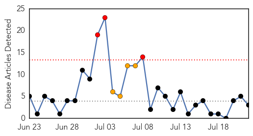
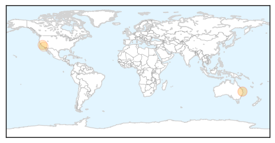
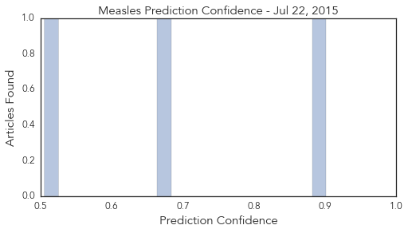

Meningitis
30-Day Web Trend
1 alerts, 0 warnings

30-Day Twitter Trend
0 alerts, 0 warnings

Article Locations

Article Confidences

Top Articles:
- 0.904
- Vaccines and their side effects
- 0.861
- Florida child dies after contracting amoeba from Costa Rican hot springs -The Tico Times
- 0.828
- Pangasinan reports 1st leptospirosis death of the year
- 0.790
- Drugs found to tackle deadly ‘brain-eating’ amoeba
- 0.714
- Press Herald sues to force state to identify schools that had chickenpox outbreaks
- 0.502
- FDA overwhelmed with foreign imports
Top Tweets:
-
No tweets found for Jul 22, 2015
Measles
30-Day Web Trend
3 alerts, 4 warnings

30-Day Twitter Trend
0 alerts, 0 warnings

Article Locations
Article Confidences
Top Articles:
Top Tweets:
-
No tweets found for Jul 22, 2015